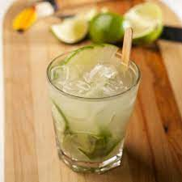

Ingredientes
- 1 limão grande
- 2 colheres de açúcar
- gelo a gosto
- cachaça
Modo de Preparo
- Pegue o limão coloque-o na horizontal e retire as duas pontas, vire-o
na vertical e corte-o ao meio, retire os meio (parte branca) do limão
e fatie.
- Coloque o limão fatiado e duas colheres bem cheias de açúcar dentro de
um copo próprio para a bebida e com um socador esprema até que saia
todo o suco do limão.
- Coloque pedras de gelo até quase encher o copo (aproximadamente 12
pedras pequenas de gelo) e encha o copo com a cachaça.
- Mexa bem com uma colher ou coloque em uma coqueteleira e sirva-se!